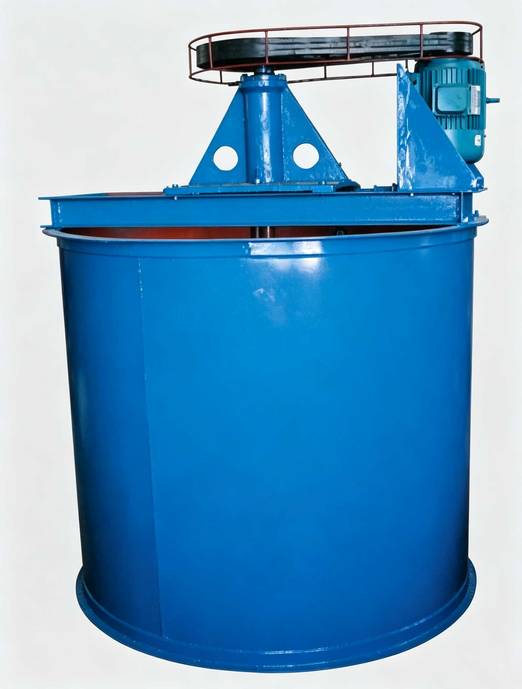

Mining Mixing Bucket is an industrial equipment for pulp mixing before metal ore flotation and non-metallic mineral mixing. Uses flat-bottom barrel with radial circulation spiral impeller, driven by motor V-belt for forced chemical-pulp mixing. Suitable for concentration ≤30% (by weight), solid particle size <1mm.

Mining Mixing Bucket is a key pre-equipment in flotation process, used for thorough mixing of pulp and flotation reagents before flotation, ensuring uniform reagent adsorption on mineral surfaces for optimal flotation. XB Series covers 7 standard models, effective volume 0.7-45 m³, max processing concentration 30% (by weight), solid particle size <1mm. Flat-bottom barrel with radial circulation spiral impeller, motor V-belt drive, simple structure, reliable operation, low maintenance. Widely used in ferrous, non-ferrous, non-metallic mineral processing mixing stations and chemical material mixing.
Pulp enters the tank from the feed port, and flotation reagents (collectors, frothers, modifiers, etc.) are dosed proportionally per recipe. The pulp level is controlled by the overflow port to ensure full utilization of effective volume.
The motor drives the main shaft and spiral impeller through V-belts. The radial impeller draws pulp from the center and discharges it radially at high speed. Under the constraint of tank walls and baffles, it forms an upward circulation flow — downward flow at the center and upward flow along the walls, creating forced mixing throughout the entire tank.
Thoroughly mixed pulp is continuously discharged through the overflow port, then flows by gravity or is pumped to the flotation machine. Reagents are uniformly adsorbed on mineral particle surfaces, with pulp concentration and reagent concentration meeting flotation process requirements for direct flotation separation.
| Model | Tank Inner Dia. (mm) | Tank Inner Height (mm) | Effective Volume (m³) | Impeller Dia. (mm) | Impeller Speed (r/min) | Motor Model | Power (kW) | Dimensions (mm) |
|---|---|---|---|---|---|---|---|---|
| XB-1000 | 1000 | 1000 | 0.7 | 250 | 530 | Y90S-4 | 1.5 | 1130×1130×1490 |
| XB-1500 | 1500 | 1500 | 2.2 | 400 | 320 | Y100L2-4 | 3 | 1750×1640×2190 |
| XB-2000 | 2000 | 2000 | 5.6 | 550 | 290 | Y132M2-6 | 5.5 | 2380×2160×2850 |
| XB-2500 | 2500 | 2500 | 11.2 | 650 | 270 | Y200L1-6 | 18.5 | 2990×2720×3540 |
| XB-3000 | 3000 | 3000 | 19 | 700 | 210 | Y200L1-6 | 18.5 | 3600×3270×3010 |
| XB-3500 | 3500 | 3500 | 30.4 | 850 | 230 | Y200L2-6 | 22 | 3920×3740×4970 |
| XB-4000 | 4000 | 4000 | 45 | 1000 | 210 | Y250M-8 | 30 | 4520×4320×5570 |
※ Custom non-standard volumes available per pulp density, concentration and mixing time. Specifications subject to change without notice.
| Component | Function | Material / Features |
|---|---|---|
| Flat-Bottom Tank Body | Cylindrical welded steel container with flat bottom, with four sets of baffles inside the tank wall to eliminate mixing vortex and enhance axial circulation flow. Overflow port at the top, discharge valve at the bottom. | Q235B Steel Plate Welded, optional wear-resistant rubber or PU lining |
| Radial Spiral Impeller | Core mixing element, multi-blade radial structure. When rotating, draws pulp from the center and discharges radially at high speed, while generating axial thrust through blade angle to create tank circulation flow. | High-manganese wear-resistant steel or rubber-lined impeller, dynamically balanced |
| Main Shaft and Bearing Housing | Connects motor drive to impeller. Impeller mounted on lower end of main shaft, with dual support from top bearing housing and bottom guide bearing for stable high-speed rotation without vibration. | 45# Steel Quenched & Tempered Shaft + Heavy-duty Self-aligning Bearing |
| Motor and V-belt Drive | Three-phase asynchronous motor drives main shaft rotation through V-belt pulleys and belts. V-belt drive can slip under overload to protect motor, and enables impeller speed adjustment by changing pulleys. | Y Series Motor + Narrow V-belt |
| Feed Port and Overflow Port | Feed port at tank top center or offset side, where pulp and reagents enter. Overflow port on upper side of tank, controlling liquid level while discharging mixed pulp to the next process stage. | Q235B Welded Pipe Port, Flange Connection |
| Discharge Valve | Located at the lowest point of tank bottom, used to empty the tank for maintenance, preventing pulp deposition and impeller clogging. | Manual or Pneumatic Gate Valve / Ball Valve |
The spiral impeller generates strong radial centrifugal force and axial thrust. Combined with tank wall baffles to eliminate vortex, it creates a full-tank 3D circulation flow. Reagents and pulp are fully mixed within 5-15 minutes, with mixing uniformity reaching over 95%.
7 standard models cover 0.7-45 m³ effective volume. Laboratories or small-scale plants can choose XB-1000/1500, medium plants use XB-2000/2500, large industrial plants use XB-3000/3500/4000, meeting daily processing needs from hundreds to tens of thousands of tons.
V-belt drive automatically slips to protect the motor when sudden pulp concentration changes cause impeller load spikes, preventing burn-out. Belt replacement when worn is quick and low-cost without motor disassembly. Impeller speed can be adjusted by changing pulleys for different pulp characteristics.
Flat-bottom tank design facilitates manufacturing and installation, with no complex mechanical seals or hydraulic systems. Daily maintenance only requires periodic checking of belt tension, bearing lubrication and impeller wear, with low frequency and short duration of shutdown maintenance.
Tank inner wall and impeller can be lined with wear-resistant rubber or polyurethane lining based on pulp abrasiveness and pH. For acidic pulp environments, optional 304 stainless steel tank; for alkaline pulp, Q235B carbon steel provides long-term service.
Impeller speed of 210-530 r/min is medium-low speed operation with high torque and thorough reagent mixing. XB-1000 requires only 1.5 kW for mixing, while XB-4000 (45 m³) uses 30 kW motor power, with per-ton energy consumption far lower than comparable high-speed mixing equipment.
For metal ores such as iron, copper, lead, zinc, gold, silver, molybdenum and nickel, pulp is thoroughly mixed with collectors, frothers and pH modifiers in the mixing tank before flotation. After reagents are uniformly adsorbed on target mineral surfaces, the pulp overflows into the flotation machine for separation, directly determining flotation recovery and concentrate grade.
Before reverse or direct flotation of non-metallic minerals such as phosphate rock, fluorite, graphite, talc and barite, the mixing tank thoroughly blends pulp with various reagents. XB Series is widely used in phosphate reverse flotation for magnesium removal, fluorite flotation and other process stages.
Suitable for mixing solid particles with liquids, or liquids with liquids in the chemical industry, such as lime milk preparation, activated carbon slurry mixing, and coagulant solution preparation. Effectively handles materials with up to 30% solid content and particles under 1mm.
Beyond pre-flotation conditioning, mixing tanks are also used for intermediate product re-conditioning in the beneficiation process — such as mixing after middlings regrinding, dilution mixing of thickener underflow, and cleaning mixing before concentrate reagent removal. Multiple tanks in series can build multi-stage gradient dosing systems.
Need Mixing Bucket? Contact us for customized pulp mixing system solution